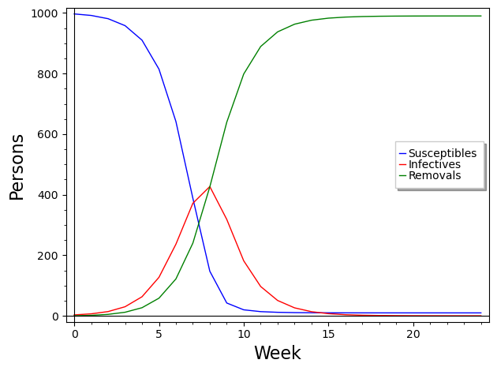
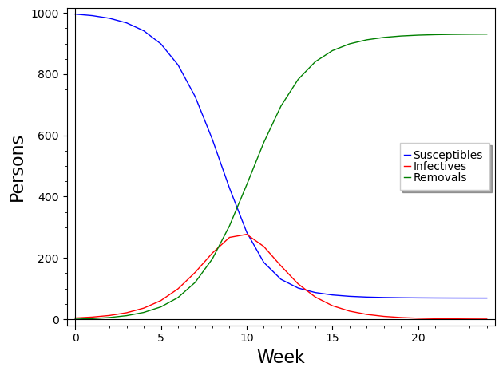
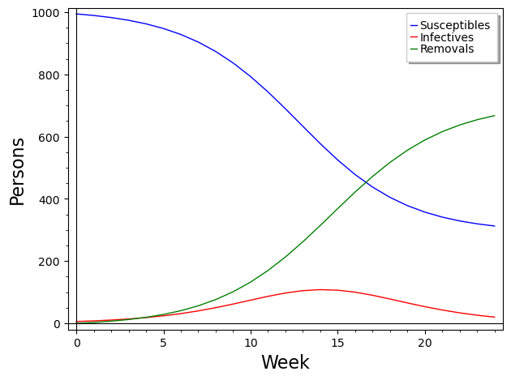
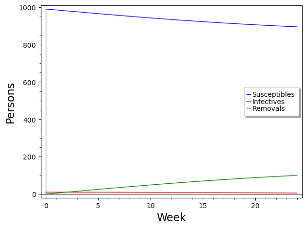

Section 8.6 Epidemics
Consider a community of 1000 persons in which three members get sick with the flu. The following week, five new cases of the flu are reported. We are interested in modeling the spread of the disease through the community.
Consider the following assumptions:
No one enters or leaves the community and no one in the community has contact with anyone outside the community
Each person is either susceptible, \(S\) (able to get the flu); infected, \(I\) (currently has the flu and is able to spread it); or removed, \(R\) (already had the flu and is not able to get it again). Initially, every person is either susceptible or infected.
A susceptible person can get the flu only by contact with an infected person.
Once a person gets the flu, they cannot get it again.
The average duration of the flu is 2 weeks, during which time an infected person can spread the disease to a susceptible person.
The model we are going to build is called an SIR model. We begin by dividing the population into three categories -- susceptible, infected, and removed -- as described in assumption 2. Those who are susceptible can become infected, and those who are infected become removed when they recover.
Let \(S_n\text{,}\) \(I_n\text{,}\) and \(R_n\) represent the number of persons who are susceptible, infected, and removed, respectively, at the end of week \(n\text{.}\) As in previous models, we begin by modeling the change in these variables using difference equations.
Let's begin by modeling \(R_n\text{.}\) Assumption 5 says that the average duration of the flu is two weeks. This means that, on average, about half of the infected persons will be healed (or removed) each week. Therefore, if we let \(\gamma = 0.5\text{,}\) a difference equation for \(R_n\) is
yielding the model
The parameter \(\gamma\) is called the removal rate and represents the proportion of the infected persons who are removed each week. The quantity \(\gamma\,I_n\) can be thought of as the number of “newly removed” persons each week.
Now for \(I_n\text{.}\) This quantity will increase due to some persons who are newly infected as a result of the interactions between susceptible and infected persons, and it will decrease due to the newly removed persons. Therefore, a difference equation is
The first term, \(\alpha S_n I_n\) models the number of interactions of the susceptible and infected persons, similar to the nonlinear predator-prey model. This quantity can be thought of as the number of “newly infected” persons. Notice that the number of newly infected persons in a week is a product of the number of infected and susceptible persons in the previous week. The parameter \(\alpha\) is called the transmission coefficient. It is a measure of the likelihood that an interaction between an infected person and a susceptible person will result in an infection and is most likely a very small number. Equation (8.6.3) yields the model
Lastly, to model \(S_n\text{,}\) note that this quantity is decreased only by the number of newly infected persons; it does not increase. Thus a difference equation is
Therefore, the model is
The overall model is given by the three equations
Now to determine the parameters \(\alpha\) and \(\gamma\text{.}\) We already noted that \(\gamma\) is the proportion of infected persons removed each week. In this case \(\gamma = 0.5\text{.}\) In general,
To find the value of \(\alpha\text{,}\) we need to use the fact that we started with three sick persons and had five new cases the first week. In terms of variables, this means that in week 0,
In week 1, the number of newly infected persons is five, so
Now we can implement the model.

Notice that the graph shows that the worst of the epidemic will occur during week 8.
Note that the number of susceptibles does not go to 0 over time. We can re-execute the loop code and look at the numbers for \(S\text{.}\)
It appears approximately nine people will never get the flu. That is
The fact that this limit is not zero is typical for an SIR model. (In apocalyptic movies, these nine people would be kidnapped by what's left of the government for examination.)
Now let's examine sensitivity to the initial number of cases. It is often the case that at the beginning of an epidemic, the number of initial cases (\(I_0\)) is underreported. We can use our model to easily assess this impact.
We will assume the number of new cases in week 1, five, is accurate. If the number of initial cases changes, the transmission coefficient changes. Generalizing equation (8.6.8), we see that
We can implement Formula (8.6.9) in our model to easily calculate the value of \(\alpha\) for different numbers of initial cases.



Notice that with 4 initial cases the value of the transmission coefficient decreases, the worst of the epidemic occurs about 2 weeks later, and the severity decreases. At the peak, only 277 people have the flu and in the long–run, about 69 people never get the flu.
As the number of initial cases increases, the severity decreases. Particularly note that with 10 or more initial cases, the number of infectives never increases. In this case we say that there is no epidemic. We see that if the initial number of infectives is higher than originally thought, the epidemic may not be as bad as originally thought.
Exercises Exercises
1.
In the original model we assumed that the population is constant. Now let’s relax this assumption. Suppose that 25 people move into the community each week starting in week 1. Assume that each of these people is susceptible.
(a)
Modify the subroutine to incorporate this influx of people and describe what happens to the spread of the flu over a 100 week period (use \(\alpha = 0.00167\text{,}\) \(\gamma = 0.5\) and \(I_0 = 3\)).
(b)
What happens if 100 new people move in each week?
2.
Suppose the population is a constant 1,000, that initially 50 people have the flu (\(I_0 = 50\)), \(\alpha = 0.00167\) and that \(\gamma = 0.5\text{.}\) To try to decrease the severity of the epidemic, the community quarantines some of those with the flu. One way to model quarantining is to simply modify the transmission coefficient. For instance, if 25% of those with the flu are quarantined, then only 75% of the interactions between those infected and those susceptible are capable of producing an infected person. Therefore, the number of newly infected people is given by
Thus the new “effective” transmission coefficient is (0.75\(\alpha\)).
(a)
Add in a new variable to the code that represents the proportion quarantined and set it to 0.25, and modify the model to incorporate this parameter. Describe what effect quarantining 25% has over not quarantining.
(b)
Add a slider that allows the user to vary the proportion quarantined between 0 and 1. Describe what happens as the proportion quarantined changes. What happens if it equals 0? What if it equals 1?
(c)
Add a slider that allows the user to vary the number of initial cases, \(I_0\text{,}\) between 0 and 1000.
(d)
Find a value of Proportion Quarantined that prevents an epidemic from occurring (i.e. the number of infectives never increases) regardless of the value of \(I_0\text{.}\) Estimate the smallest such value of Proportion Quarantined.